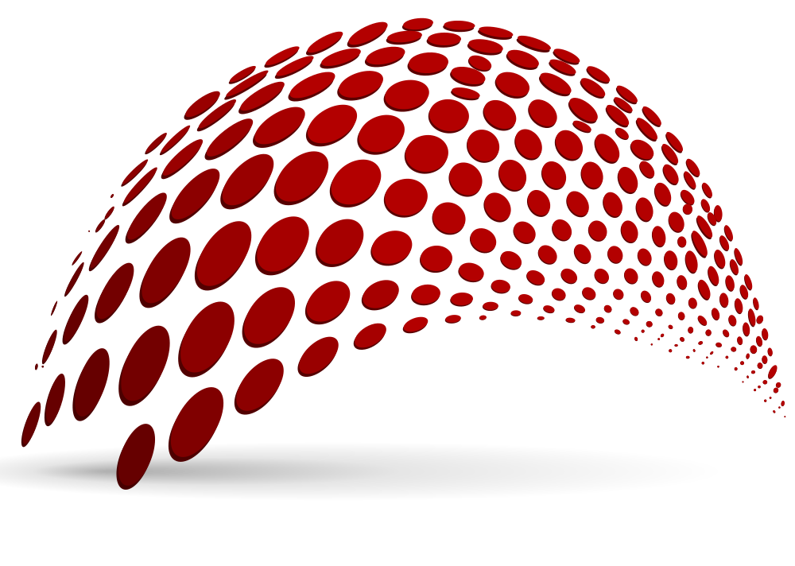

VORSCHLAG, NICHT FREIGEGEBEN · Entwurf, vorläufig – Abgleich mit der Originalreferenz Feld A steht aus
Tamil Dots als Hintergrund
Die Punkte rahmen und gliedern; sie liegen nie unter Schrift oder Gesichtern.
Diese Woche
- So 15.11. · DüsseldorfDeepavali-Feier des Düsseldorf Tamil Sangam
- BerlinSri Ganesha Hindu Temple: Lichterfest mit Lakshmi Pooja
- MünchenSivaalayam-Tempel und Sri-Pillaiyar-Tempel
4 · Fuß auf Weiß · fuss-hell-auf-weiss.svg
5 · Sonderseite 404 · ../spatial.svg

Diese Seite gibt es nicht
Zur Startseite von tamil.de